Manuel de référence
Description de l'interface et des commandes
Transcriber 1.4.4
DGA, avril 2002
1. Démarrage
2. Disposition des fenêtres
3. Fichier de transcription
4. Fichier de signal
5. Manipulation du signal
6. Edition
7. Episode
8. Segmentation du signal
9. Tours de parole et locuteurs
10. Sections et sujets
11. Bruit de fond
12. Evénements et commentaires
13. Raccourcis clavier
14. Options et configuration de l'interface
15. Autres fonctions
1. Démarrage
1.1. Environnement de travail
Le logiciel est conçu afin de permettre la transcription de signaux
de longue durée sur un matériel standard. A titre d'exemple,
plusieurs enregistrements d'une heure (échantillonnés à
16 kHz sur 16 bits en mono) ont déjà été transcrits
avec un PC/Pentium 200MHz sous Linux. L'usage d'un casque est fortement
conseillé pour une transcription de qualité, mais des haut-parleurs
sont utiles pour une vérification à plusieurs.
1.2. Lancement de l'outil
Lorsque Transcriber est installé de manière standard, on
peut le lancer avec la commande :
trans
ou suivant la configuration en cliquant dans un menu ou sur une icône
particulière. Une fenêtre de dialogue propose alors de sélectionner
un fichier son pour créer une nouvelle transcription associée
à ce signal, ou un fichier de transcription pour afficher ou modifier
celle-ci. Un court exemple de signal avec une transcription associée
est disponible dans le sous-répertoire "demo" distribué
avec le logiciel.
Lorsque la configuration de travail a été enregistrée
au cours d'une session précédente, les fichiers de signal
et de transcription en cours sont automatiquement réouverts s'ils
sont encore disponibles sur le disque.
Il est possible aussi de lancer l'outil en indiquant sur la ligne de
commande un nom de fichier signal, de fichier de transcription, ou les
deux. Si les deux fichiers sont dans le même répertoire, portent
le même nom (à l'exception de l'extension) et que le fichier
signal possède une extension standard (par exemple .wav ou
.snd) , le nom du fichier signal peut être omis, son ouverture
étant automatique :
trans demo/frint980428.xml
1.3. Configuration initiale
Après le premier lancement de l'outil, il est conseillé d'ouvrir
le menu [Options]/[Général...] pour renseigner
:
-
le nom du transcripteur qui sera enregistré par défaut dans
chaque nouvelle transcription ;
-
la langue pour l'interface du logiciel (l'anglais et le français
sont disponibles) ;
-
éventuellement le nom du fichier dans lequel seront enregistrées
les informations sur la production quotidienne - par défaut la fonction
est désactivée (cf. 14.2) ;
ainsi que des options plus spécifiques aux signaux dans le menu
[Options]/[Fichier son...] :
-
le format des fichiers sans entête (cf. 4.2)
;
-
le mode de calcul et le répertoire de stockage de l'enveloppe des
signaux (cf. 4.3).
Les options doivent ensuite être enregistrées avec le menu
[Options]/[Enregistrer la configuration].
2. Disposition des fenêtres
2.1. La barre des menus
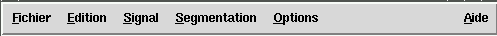
2.2. La transcription
Dans la moitié supérieure de l'interface, une fenêtre
d'éditeur de texte permet de saisir la transcription orthographique
du signal.
-
les débuts de section (changement de sujet, d'émission...)
sont indiqués par un bouton (orange par défaut) centré
dans une ligne ;
-
les débuts de tour de parole (changement de locuteur, ou éventuellement
pas de locuteur) sont représentés par un bouton (bleu par
défaut) à gauche d'une ligne ;
-
et un petit cercle (vert par défaut) à gauche des autres
lignes signale le début de la transcription orthographique d'un
nouveau segment.
Le début du signal marque aussi le début de chaque segmentation
; la transcription contient donc toujours au moins une section, un tour
et un segment sur les trois premières lignes. La ligne dans laquelle
se trouve le curseur est surlignée. Une barre de défilement
à droite permet de manipuler des transcriptions de longueur arbitraire.
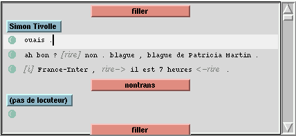
2.3. La barre de boutons
Au centre de l'écran, un bandeau de boutons (masquable) offre des
raccourcis pour jouer le signal ou pour afficher les informations sur le
signal et la transcription, et rappelle le nom des fichiers en cours d'édition.

Le commandes sont :
 : retourne au début
du segment ou au segment précédent
: retourne au début
du segment ou au segment précédent
 : retour rapide (de
1/2 seconde)
: retour rapide (de
1/2 seconde)
 : pause
: pause
 : lecture
: lecture
 : avance rapide (de
1/2 seconde)
: avance rapide (de
1/2 seconde)
 : va au segment suivant
: va au segment suivant
 : affiche la fenêtre
d'informations sur le signal et la transcription
: affiche la fenêtre
d'informations sur le signal et la transcription
2.4. Le signal et la segmentation
Dans la moitié inférieure de l'interface sont affichés
le signal et la segmentation ; une barre de défilement au-dessus
permet de se déplacer et une autre barre de défilement plus
petite (masquable par un menu contextuel) permet de modifier la résolution
d'affichage. Sous le signal, la segmentation orthographique, en tours de
parole, en section ainsi qu'en conditions acoustiques est affichée
et alignée avec le signal ; le segment courant de la transcription
orthographique est surligné. Le texte du segment (transcription,
nom du locuteur, sujet de la section) est affiché dans l'intervalle
temporel correspondant aux bornes du segment. Une deuxième vue du
signal à une échelle différente peut être affichée.
La position courante du curseur dans le signal est représentée
avec une barre rouge verticale. Les deux curseurs (celui dans la fenêtre
de texte et celui dans le signal) sont synchronisés de manière
à ce que le segment courant dans le texte soit à chaque instant
identique au segment courant sous le signal ; lorsqu'un des curseurs change
de segment, l'autre curseur est donc automatiquement déplacé
afin d'apparaître dans le même segment.
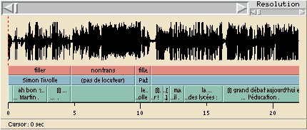
Sur le signal, la souris permet de réaliser les contrôles
suivants :
-
clic du bouton 1: place le curseur à la position désignée
dans le signal
-
cliquer-déplacer le bouton 1 : sélectionner une partie du
signal
-
clic du bouton 2 (ou shift-clic du bouton 1) : étendre la sélection
du signal
-
clic du bouton 3 : afficher un menu contextuel
Sur les lignes de segmentation, les commandes de la souris sont :
-
clic du bouton 1 : sélectionner le signal sur l'intervalle du segment
-
cliquer-déplacer le bouton 1 : sélectionner le signal sur
plusieurs segments contigus
-
shift-clic du bouton 1 : étendre la sélection
-
cliquer-déplacer le bouton 2 (ou control-cliquer-déplacer
le bouton 1) : déplacer la frontière entre deux segments
-
clic du bouton 3 : afficher un menu contextuel
3. Fichier de transcription
3.1. Créer une nouvelle transcription

Choisir le menu [Fichier]/[Nouvelle transcription].
Une fenêtre de dialogue propose de choisir le fichier son à
transcrire. Il est possible de modifier ce choix ultérieurement.
3.2. Lire une transcription
Avec [Fichier]/[Ouvrir une transcription...], il est
possible de lire un fichier de transcription produit par Transcriber, ainsi
que des fichiers de transcription ou de segmentation dans quelques formats
courants identifiés par le suffixe du nom du fichier:
-
Format XML natif (.trs, .xml)
-
OGI lola (.lola)
-
LDC .typ format (.typ)
-
ESPS/xwaves (.lab)
-
LIMSI label (.lbl)
-
TIMIT format (.phn, .wrd, .txt)
- Childes/CHAT (.cha) support expérimental, avec de nouveaux attributs
disponibles dans l'interface.
Le fichier signal associé à la transcription est ensuite
recherché ; s'il n'est pas trouvé automatiquement, une fenêtre
de dialogue demande à l'utilisateur de le localiser.
3.3. Enregistrer la transcription
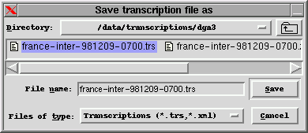
La transcription peut être enregistrée avec le menu [Fichier]/[Enregistrer]
si des modifications ont eu lieu depuis la création ou le dernier
enregistrement. Lors du premier enregistrement, le nom du fichier signal
suivi de l'extension .trs est proposé. La transcription
peut être enregistrée sous un autre nom avec la commande [Fichier]/[Enregistrer
sous...].
3.4. Exporter sous un autre format
L'exportation sous un format différent du format de Transcriber
(aux formats .typ, .stm ou .html) est proposée
dans le menu [Fichier]/[Exporter], mais ces formats ne sont pas
aussi complets que le format normal et n'assurent pas la relecture complète
de la transcription. Cependant le format .html permet d'imprimer la
transcription à partir de n'importe quel browser.
3.5. Revenir à la version précédente
La commande [Fichier]/[Revenir au fichier] propose d'annuler
toutes les modifications en mémoire et de relire la dernière
version enregistrée sur le disque.
3.6. Enregistrement automatique
Après une modification, si la transcription en cours n'est enregistrée
sous un certain délai, alors un enregistrement automatique est réalisé
dans le répertoire de la transcription et avec le même nom
précédé et suivi du caractère # (par exemple,
/data/transcription/#radio.trs#).
Ce fichier est détruit lors de la sauvegarde normale du fichier.
Le délai est donné par l'utilisateur dans la fenêtre
[Options]/[Général] ; s'il est nul, la
fonction est désactivée. La récupération automatique
de la sauvegarde est proposée si une sauvegarde de la transcription
est détectée à l'ouverture.
3.7. Fichier de sauvegarde
Lorsqu'une transcription qui a été lue sur le disque puis
modifiée est enregistrée, l'état de la transcription
au moment de sa lecture initiale est conservé dans un fichier du
même nom que la transcription suivi de l'extension indiquée
dans la fenêtre [Options]/[Général]
(par exemple, /data/transcription/radio.trs~ ). Si le champ contenant
l'extension est vide, la fonction est désactivée.
3.8. Encodage des fichiers
Avec Transcriber 1.4.1 fonctionnant sous Tcl/Tk version 8.1.1 ou plus récente,
l'encodage utilisé pour l'enregistrement des fichiers pour être
modifié dans [Options]/[Général].
L'encodage par défaut est le ISO-8859-1 (Latin1). Il est possible
d'utiliser un autre encodage 8 bits (ISO-8859-*, EUC-JP...) mais aussi
Unicode (enregistré au format UTF-8 de longueur variable, compatible
ascendant avec l'ASCII-US 7 bits). Dans le doute, si Latin1 ne convient
pas, il est conseillé d'essayer UTF-8 qui est un sur-ensemble de
tous les autres.
En lecture, l'encodage défini dans l'entête de la transcription
lors de son enregistrement est automatiquement utilisé. Lorsque
cette information est absente de l'entête (par exemple pour des transcriptions
produites avec une version plus ancienne de Transcriber ou de Tcl/Tk),
ou lorsque la transcription est dans un encodage qui n'est pas compatible
ASCII, l'encodage défini par l'utilisateur est utilisé aussi
pour la lecture.
4. Fichier de signal
4.1 Ouvrir un fichier signal
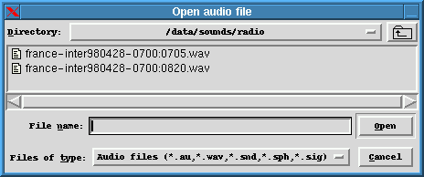
Le fichier signal est normalement sélectionné lors de
la création d'une nouvelle transcription ou en changeant le signal
associé à une transcription avec la commande [Fichier]/[Ouvrir
un fichier son...].
4.2. Format des fichiers sons
La plupart des formats de fichiers audio sont reconnus automatiquement
par l'intermédiaire de la librairie Snack : WAV, AU, SND, AIFF,
SMP, Sphere (si ce format particulier a été installé
avec Snack). Les fichiers au format MP3 sont acceptés, mais du fait
de la compression dans ces fichiers, l'accès direct à une
portion du signal est parfois lent. Le format des fichiers sans en-tête
(codage sur 8 bits ou 16 bits, ordre des octets...) est déterminé
automatiquement, sauf en ce qui concerne la fréquence d'échantillonnage
et le nombre de canaux (mono/stéréo) qui sont indiqués
par l'utilisateur dans la fenêtre de dialogue [Options]/[Fichier
son...].
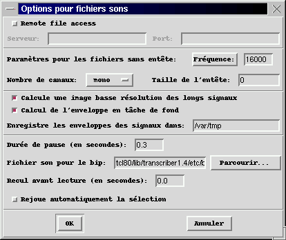
4.3. Enveloppe du signal
Pour accélérer l'affichage du signal à faibles résolutions
(affichage d'un intervalle de plus de 30 secondes), une image à
basse résolution (ou enveloppe) globale est calculée pour
tous les signaux de plus de 30 secondes. Le calcul est réalisé
en tâche de fond à la première ouverture du signal,
et l'enveloppe est enregistrée dans un répertoire spécifique
pour être réutilisée lors des sessions suivantes. Il
est possible d'interrompre le calcul en cours, ou de désactiver
cette fonction dans le menu [Options]/[Fichier son...].
Le calcul en tâche de fond peut aussi être désactivé.
Dans la version pour Windows, le calcul de l'enveloppe est désactivé
en raison de dysfonctionnements.
Le répertoire dans lequel les enveloppes sont stockées
(avec le suffixe .shp) est indiqué lui aussi dans [Options]/[Fichier
son...] ; par défaut, un répertoire du type /var/tmp
est proposé, mais il est souhaitable de créer un répertoire
spécifique, éventuellement partagé par tous les utilisateurs
de Transcriber, et autorisé en écriture pour que l'utilisateur
puisse créer de nouvelles enveloppes.
Il est aussi possible de distribuer le fichier d'enveloppe dans le même
répertoire que le fichier signal, y compris dans un répertoire
en lecture seule (attention, le format du fichier dépend de l'architecture
de la machine).
4.4. Ouvrir un fichier distant
L'architecture client-serveur pour l'affichage et la restitution des signaux
à distance nécessite le lancement d'un serveur spécifique
sur la machine hôte (un script tcl/SoundServer.tcl est proposé
dans la distribution et doit être éventuellement adapté)
et la sélection par l'utilisateur de l'accès à distance
(ainsi que la désignation du serveur et du port de données
utilisé) dans [Options]/[Fichier son...].
5. Manipulation du signal
La transcription d'un long enregistrement nécessite d'écouter
généralement plusieurs fois des portions courtes du signal.
Les commandes-type d'un magnétophones sont disponibles avec les
boutons de la barre de commandes ainsi que dans le menu [Signal]
; en pratique, les raccourcis claviers sont très utiles et il est
conseillé de mémoriser les plus fréquents.
5.1 Positionner le curseur
Il est possible de positionner directement le curseur à n'importe
quelle position dans le signal par clic de souris. La commande [Signal]/[Aller
à...]/[Position] permet d'indiquer une valeur précise
(commande accessible aussi en cliquant sur la ligne d'information sous
le signal).
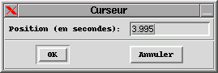
5.2. Sélectionner une portion de signal
La sélection d'une partie du signal s'effectue en cliquant puis
en déplaçant la souris avant de relâcher le bouton,
ou en cliquant avec le bouton central de la souris (ou avec le bouton de
gauche avec la touche Shift enfoncée) pour étendre
la sélection. La position du curseur et éventuellement l'étendue
de la sélection sont indiquées sous le signal. Si l'option
Joue
automatiquement la sélection dans [Options]/[Général]
est activée, le segment sélectionné est joué
dès que le bouton de la souris est relâché.
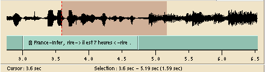
5.3. Jouer le signal
Les boutons de lecture et
pause , la commande
[Signal]/[Joue/Pause] ou son raccourci (la touche Tab)
permettent de jouer le son à partir de la position du curseur ou
de l'arrêter. Si une sélection est active, seule cette partie
sera jouée. Le menu [Signal]/[Mode de lecture]
permet de choisir un mode de lecture parmi les suivant: lecture en continu
(le mode par défaut), lecture avec pause aux frontières des
segments, avec émission d'un bip aux frontières, avec arrêt
à la prochaine frontière, ou lecture en boucle sur la sélection
(si elle est active) ou à défaut sur le segment courant après
une pause. La durée de la pause ou le choix du fichier son pour
le bip sont contrôlés dans la fenêtre [Options]/[Fichier
son...]; le paramètre
Recul avant la lecture permet
de revenir automatiquement en arrière avant chaque redémarrage
de la lecture.
Si Snack version 2.0 est installé, il est possible de ne lire que le canal gauche
ou droit d'un fichier stéréo grâce au menu [Signal]/[Stereo
channel]. Si le fichier est mono ou si la version de Snack est plus ancienne,
cela n'aura aucun effet.
5.4. Jouer un segment
Lorsqu'une segmentation du signal est réalisée, la commande
[Signal]/[Joue le segment] ou un de ses raccourcis (Shift-Tab
ou Alt-Tab) joue le segment dans lequel se trouve le curseur à
partir du début et jusqu'à la fin du segment, puis repositionne
le curseur en début de segment.
5.5. Avance rapide
Les boutons d'avance
et de retour rapide (menu
[Signal]/[Aller à...]/[Avant] ou [Arrière])
font avancer ou reculer le curseur du signal d'une demi seconde. Lorsque
le bouton reste enfoncé (bouton de la souris enfoncé), le
mouvement devient continu par pas d'une demi seconde. Cela fonctionne aussi
pendant la restitution, mais le son est haché.
5.6. Passer au segment suivant
Les boutons de plage précédente et
suivante (menu [Signal]/[Aller
à...]/[Précédent] ou [Suivant])
déplacent le curseur au début du segment suivant ou précédent
dans la transcription orthographique (y compris aussi pendant la restitution).
5.7. Changer le volume
Le niveau sonore est réglable (de 0 à 100) dans la fenêtre
[Signal]/[Panneau de contrôle].
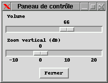
5.8. Zoom vertical
Pour les portions de signal dont la dynamique est faible, [Signal]/[Panneau
de contrôle] affiche un curseur pour modifier l'amplitude verticale
du signal. Cela ne modifie pas le volume.
6. Edition
6.1. Couper/Copier/Coller
Les commandes habituelles d'édition de texte (menu [Edition]/[Copier],
[Couper] ou [Coller] et les raccourcis standards associés
Control-x/c/v)
permettent de manipuler des portions de transcription, y compris les événements
contenus dans le texte, à l'exclusion des boutons de section, de
tour et de bruit de fond.
6.2. Annuler
La commande d'annulation (menu [Edition]/[Annuler] ou
raccourci standard associé Control-z) est de capacité
limitée, car elle restaure simplement le segment courant de la transcription
orthographique dans l'état précédant l'édition
du segment. De très nombreuses actions ne sont pas annulables. Il
est donc conseillé d'enregistrer fréquemment, éventuellement
sous différentes versions.
6.3. Chercher/Remplacer
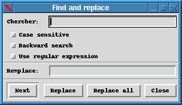
La commande [Edition]/[Chercher/Remplacer] (raccourci
Control-f)
propose une recherche avec différentes options: sensible ou non
aux majuscules, recherche vers l'arrière, utilisation d'expressions
régulières à la place de la suite de caractères
à trouver, et éventuellement une chaîne de caractères
de remplacement.
6.4. Glossaire
La commande [Edition]/[Glossaire] ou son raccourci
Control-k
propose principalement deux modes : la création d'une nouvelle entrée
dans un glossaire et l'insertion d'une entrée existante dans l'éditeur
de texte à la position courante ; de plus, la modification des entrées
existants reste toujours possible. Lorsqu'une portion de texte est sélectionnée
en grisé à l'appel de la commande, la création d'une
nouvelle entrée du glossaire est proposée pour cette sélection
; il est possible de rajouter un commentaire, puis OK permet de
mémoriser la nouvelle entrée. Si aucune sélection
de texte est active à l'appel de la commande, on peut cliquer sur
une ligne de la liste des entrées du glossaire pour la sélectionner
puis cliquer sur Insérer pour l'ajouter à la position du
curseur. Les entrées du glossaire sont actuellement enregistrées
avec le fichier de configuration ; un fichier autonome sera probablement
utilisé dans le futur.
6.5. Gestion automatique des espaces
L'insertion automatique des espaces est contrôlée dans
la fenêtre [Options]/[Général]. Lorsque
celle-ci est active, un espace est rajouté en fin de ligne à
la création d'une nouvelle frontière et avant les symboles
de ponctuation .,;: pour les séparer des mots précédents.
6.6. Correction orthographique
La correction orthographique est lancée par la commande [Edition]/[Correction
orthographique]. Elle nécessite l'installation préalable
du logiciel 'ispell' (en standard sur la plupart des systèmes
Unix, mais pas sous Windows). Le dictionnaire utilisé pour la correction
est choisi automatiquement en fonction de la langue indiquée dans
les paramètres globaux (cf. 7.1). Un message d'erreur signale si
le dictionnaire n'est pas trouvé ou que le nom ne correspond pas;
il faut alors vérifier l'installation locale de ispell pour
indiquer le nom exact du dictionnaire.
Dès qu'un mot inconnu est rencontré, une fenêtre
de dialogue propose de :
-
ajouter ce mot au dictionnaire - il sera mémorisé définitivement;
-
ignorer le mot et passer au suivant;
-
remplacer le mot après correction manuelle ou sélection d'une
des propositions;
-
fermer la fenêtre et arrêter la correction.
Une option dans la fenêtre [Options]/[Général]
permet de contrôler la correction orthographique sur les mots commençant
par une majuscule. Par défaut, ils sont ignorés.
6.7. Caractères accentués et internationalisation
La méthode d'entrée des caractères ne dépend pas de
Transcriber mais du système. Ainsi, avec un clavier adapté,
certains caractères peuvent être entrés directement.
Sous Unix, on peut reprogrammer logiciellement les touches (par exemple
les touches de fonctions) en configurant X11 avec l'outil 'xmodmap'. Cependant,
il est aussi possible d'entrer des caractères accentués par
combinaisons de touches, en définissant des raccourcis dans Transcriber
(cf. section 13).
L'encodage des fichiers est par défaut en ISO-8859-1 (Latin1),
mais d'autres sont disponibles si Transcriber est lancé avec Tcl/Tk
version 8.1.1 ou plus récente (cf. section 3.8).
7. Episode
7.1. Modifier les paramètres globaux de la transcription
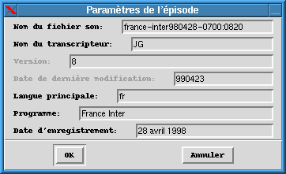
Des informations globales à la transcription peuvent être
renseignées dans la fenêtre [Fichiers]/[Paramètres
de l'épisode]. Il s'agit :
-
du nom du fichier son associé à la transcription (sans le
chemin d'accès ni l'extension), ce qui permet de retrouver automatiquement
le signal associé à la transcription si ceux-ci portent des
noms différents ;
-
du nom du transcripteur ; lors de la création d'une nouvelle transcription,
le nom par défaut indiqué au logiciel est utilisé
;
-
du numéro de version de la transcription. Ce numéro est automatiquement
incrémenté à la première modification du fichier
et ne peut être édité ;
-
de la date de la dernière modification. Cette date est automatiquement
mise à jour à la date courante à la première
modification du fichier et ne peut être éditée ;
-
du programme (émetteur, émission...) éventuellement
renseigné par l'utilisateur ;
-
de la date d'enregistrement si celle-ci est connue ;
-
de la langue principale du programme.
8. Segmentation du signal
8.1. Insérer une frontière
La commande [Segmentation]/[Insérer une frontière]
ou son raccourci Return crée une nouvelle frontière
à la position courante du curseur dans le texte et dans le signal.
Les positions des frontières étant arrondies à la
milli-seconde la plus proche, la nouvelle frontière doit être
à une distance minimale de 1 ms des frontières déjà
existantes. Une nouvelle ligne apparaît dans la transcription, et
le segment sous le signal est coupé en deux à la position
du curseur. Il est possible de réaliser cette opération pendant
que le son est joué.
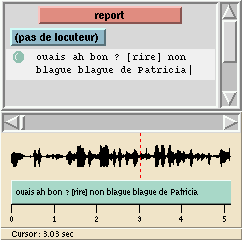
=> 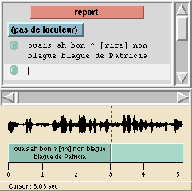
8.2. Supprimer une frontière
La commande [Segmentation]/[Supprimer la frontière]
ou son raccourci Shift-Backspace supprime la frontière
du début du segment courant et en fusionne le contenu avec le segment
précédent. Si la frontière marquait aussi le début
d'un nouveau tour de parole ou même d'une section, ceux-ci sont supprimés
dans la segmentation correspondante.
8.3. Déplacer la frontière entre deux
segment
En cliquant avec le bouton central de la souris (ou le bouton de gauche
avec la touche Control simultanément enfoncée) sur
la frontière entre deux segments et en déplaçant la
souris, on déplace cette frontière ainsi que les frontières
synchronisées dans les autres segmentations. L'amplitude du mouvement
est limitée par les frontières des segments contigus. Lorsque
l'action est réalisée avec le bouton Shift enfoncé,
les frontières des segments adjacents sont repoussées si
nécessaire. L'intervalle laissé entre les frontières
dépend de la résolution d'affichage au moment de l'action
et reste toujours supérieur à 1 ms.
8.4. Sélectionner le signal sur un ou plusieurs
segments
En cliquant avec le bouton de gauche sur un segment sous le signal (et
pour n'importe quel niveau de segmentation), le signal est sélectionné
sur toute l'étendue du segment et le curseur est positionné
au début du segment ; cette sélection peut être étendue
en déplaçant la souris avant de relâcher le bouton
ou en cliquant avec le bouton de gauche avec la touche Shift simultanément
enfoncée.
8.5. Masquer/Afficher des segmentations
En cliquant avec le bouton de droite, un menu contextuel est activé
qui permet de jouer le signal, de changer la résolution, et de contrôler
l'affichage ou le masquage des différentes segmentations sous le
signal.
9. Tours de parole et locuteurs
9.1. Créer un tour de parole
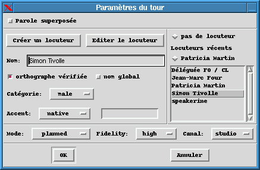
La commande [Segmentation]/[Créer un tour...]
ou son raccourci Control-t crée un nouveau tour de parole
commençant au début du segment courant. Un tour de parole
est caractérisé par l'identité d'un (ou plusieurs)
locuteur(s), ainsi que par des paramètres facultatifs décrivant
:
-
le mode d'élocution du tour (spontané ou planifié)
-
la qualité d'enregistrement (bonne, moyenne, médiocre)
-
et la largeur de bande du signal (parole téléphonique à
bande étroite ou signal large bande de studio).
La première ligne de la fenêtre sert à gérer
la parole superposée qui est décrite dans la section suivante.
La partie centrale de la fenêtre sert à la création,
la sélection ou la modification des locuteurs et de leurs caractéristiques.
En cliquant sur Créer un locuteur ou en tapant directement
son nom au clavier, on crée un nouveau locuteur pour lequel il est
possible de définir le genre, l'accent, etc. A droite de la fenêtre,
une liste des locuteurs déjà définis triée
par ordre alphabétique est disponible, ainsi que la sélection
des locuteurs récemment utilisés. En cliquant sur un de ces
locuteurs, on le choisit comme locuteur de ce tour. L'orthographe de son
nom et ses caractéristiques sont fixées mais peuvent être
modifiées globalement après avoir cliqué sur Editer
le locuteur puis en validant avec OK. Enfin, le champ pas
de locuteur s'applique aux segments de signal sans parole.
9.2. Parole superposée
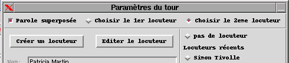
Lors de la création ou de la modification des paramètres
d'un tour, le mode Parole superposée peut être activé.
Le deuxième locuteur est alors désigné de la même
façon que le premier.
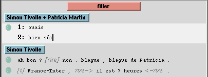
Dans l'éditeur de texte, chaque segment du tour de parole modifié
contient alors deux lignes précédées du chiffre 1
ou 2 ; la segmentation orthographique sous le signal est séparée
horizontalement entre les deux locuteurs. A l'inverse, le retour au mode
normal se fait en désélectionnant le champ Parole superposée
dans les paramètres du tour ; le premier locuteur est proposé
comme locuteur restant et les transcriptions des deux locuteurs sont fusionnées
en une seule.
9.3. Modifier ou supprimer un tour de parole
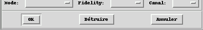
La commande [Segmentation]/[Paramètres du tour...]
permet l'édition et éventuellement la suppression du tour
de parole qui contient le segment courant (même si ce segment n'est
pas le premier du tour). Il est possible alternativement de cliquer sur
le bouton correspondant au tour à éditer dans la fenêtre
de l'éditeur de texte. Tous les paramètres proposés
lors de la création du tour sont modifiables. Un bouton supplémentaire
autorise la destruction du tour.
9.4. Chercher les prises de parole d'un locuteur
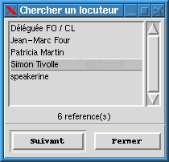
La commande [Edition]/[Locuteurs]/[Chercher un
locuteur] affiche la liste des locuteurs définis pour la transcription.
En cliquant sur un nom, le nombre de références de ce locuteur
dans la transcription est affiché sous la liste. Le bouton Suivant
déplace le curseur jusqu'au premier segment de la prochaine occurrence
d'un tour de parole dans lequel le locuteur intervient.
9.5. Importer des locuteurs d'un autre fichier
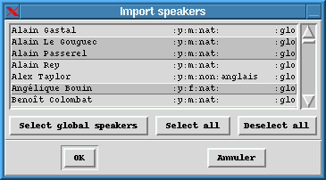
La commande [Edition]/[Locuteurs]/[Importer à
partir du fichier...] fait choisir un fichier de transcription et
affiche la liste des locuteurs de ce fichier qui n'existent pas déjà
dans la transcription courante. Le nom des locuteurs est suivi de la liste
abrégée des attributs (orthographe vérifiée:
y/n, genre: m/f; natif: nat/non; accent; global: glo/_). L'utilisateur
peut sélectionner ou désélectionner individuellement
des locuteurs en cliquant sur la ligne correspondante, ou sélectionner
uniquement les locuteurs qui ont été signalés avec
le champ "nom global" actif.
9.6. Supprimer les locuteurs inutilisés
La commande [Edition]/[Locuteurs]/[Supprime les locuteurs
inutilisés...] supprime de la liste des locuteurs tous ceux
qui n'interviennent dans aucun tour de parole.
10. Sections et sujets
10.1. Créer une nouvelle section
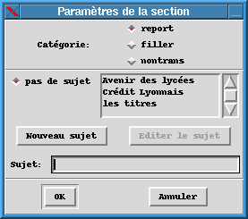
La commande [Segmentation]/[Créer une section...]
ou le raccourci associé Control-e crée une nouvelle
section commençant au début du segment courant. Une fenêtre
de dialogue permet de choisir la catégorie parmi celles prédéfinies
("report" pour reportage, "filler" pour les transitions, "nontrans" pour
toutes les sections non transcrites), et le sujet. La liste des sujets
existants est affichée à droite, les sujets utilisés
récemment sont rappelés à gauche. En cliquant sur
Nouveau
sujet ou en tapant directement un texte au clavier, un nouveau sujet
est défini. Si un sujet existant est sélectionné et
que l'on clique sur Editer le sujet, toutes les sections portant
sur ce sujet sont modifiées simultanément. En effaçant
le texte ou en choisissant pas de sujet, la section ne porte pas
de sujet. De plus, un nouveau tour de parole est systématiquement
créé à chaque début de section ; par défaut,
le locuteur courant est proposé.
10.2. Modifier ou supprimer une section
La commande [Segmentation]/[Paramètres de la section...]
permet l'édition et éventuellement la suppression de la section
qui contient le segment courant (même si ce segment n'est pas le
premier de la section). Il est possible alternativement de cliquer sur
le bouton correspondant à la section à éditer dans
la fenêtre de l'éditeur de texte. Tous les paramètres
proposés lors de la création de la section sont modifiables.
Un bouton supplémentaire autorise la destruction de la section.
10.3. Chercher l'apparition d'un sujet
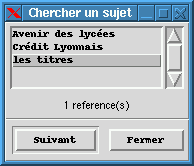
La commande [Edition]/[Sujets]/[Chercher un sujet]
affiche la liste des sujets définis pour la transcription. En cliquant
sur un nom, le nombre de références de ce sujet dans la transcription
est affiché sous la liste. Le bouton Suivant déplace
le curseur jusqu'au premier segment de la prochaine occurrence d'une section
portant sur ce sujet.
10.4. Importer les sujets d'un autre fichier
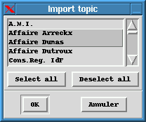
La commande [Edition]/[Sujets]/[Importer à
partir du fichier...] fait choisir un fichier de transcription et
affiche la liste des sujets de ce fichier qui n'existent pas déjà
dans la transcription courante. L'utilisateur peut sélectionner
ou désélectionner individuellement des sujets en cliquant
sur la ligne correspondante.
10.5. Supprimer les sujets inutilisés
La commande [Edition]/[Sujets]/[Supprime les sujets
inutilisés...] supprime de la liste des sujets tous ceux qui
n'interviennent dans aucune section.
11. Bruit de fond
La segmentation en conditions acoustiques sert à indiquer des modifications
durables du bruit de fond. Les marqueurs correspondants signalent un changement
d'état de la valeur du bruit de fond, et leur valeur annule et remplace
celle du marqueur précédent. Chaque transcription commence
implicitement à l'instant initial avec un marqueur de bruit de fond
vide.
11.1. Créer un bruit de fond
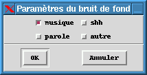
La commande [Segmentation]/[Insérer un bruit de
fond] crée un marqueur de bruit de fond à la position
courante du curseur dans le signal. Il n'est pas possible de créer
deux marqueurs au même instant. Si le curseur dans le signal est
exactement au début du segment courant, le marqueur de bruit de
fond restera toujours synchronisé avec le début du segment
et l'icône associé apparaîtra en début de ligne ; sinon,
les deux segmentations ne seront pas synchronisées. Le type du bruit
est indiqué par un combinaison de différents choix (parole,
musique, bruit électrique, autre) avec des boîtes à
cocher ; le type de bruit proposé par défaut est celui du
marqueur précédent. L'icône d'une note de musique apparaît
dans l'éditeur de texte à la position courante du texte dans
le segment. La segmentation en bruit de fond, sous le signal, est colorée
en grisé (par défaut) sur les portions du signal comportant
un bruit de fond.
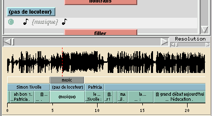
11.2. Indiquer la fin d'un bruit de fond, le changement
de bruit
Il faut créer à la position correspondant à la fin
du bruit un nouveau marqueur de bruit de fond vide, c'est-à-dire
en désélectionnant tout les types de bruits. Lors des changements
de bruits, il ne faut pas indiquer la fin du bruit précédent,
mais uniquement le nouveau bruit lorsque celui-ci remplace l'ancien.
11.3. Modifier ou supprimer un marqueur de bruit de
fond
On peut modifier ou détruire un marqueur de bruit de fond en cliquant
sur l'icône en forme de note de musique dans l'éditeur de
texte. Dans ce dernier cas, les conditions acoustiques du marqueur précédent
redeviennent les conditions courantes.
12. Evénements et commentaires
12.1. Insérer un événement
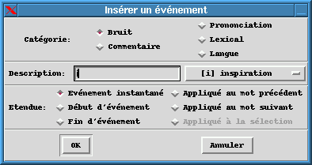
La commande [Edition]/[Insérer un événement]
ou Control-d ouvre une fenêtre qui propose de définir:
-
la catégorie de l'événement: bruit, commentaire, balise
de prononciation, marqueur lexical, changement de langue.
-
la description de l'événement par une chaîne de caractères
librement éditable. Pour chaque catégorie, une liste de valeurs
prédéfinies avec une description peut néanmoins être
proposée dans un menu à droite du champ de texte.
-
l'étendue temporelle de l'événement (sauf pour les
commentaires) ; un événement peut être instantané
ou avoir une durée ; dans ce cas, il faut indiquer un marqueur de
début et un marqueur de fin. Un marqueur peut aussi s'appliquer
uniquement au mot précédent ou suivant.
12.2. Insérer le début et la fin d'un
événement
Il est possible d'insérer simultanément les marqueurs de
début et de fin d'événement en sélectionnant
avec la souris la portion de texte à laquelle s'applique l'événement
(par exemple, les quelques mots d'une citation étrangère
qui recevront un marqueur de langue).
12.3. Insérer un commentaire
Avec [Edition]/[Insérer un commentaire], un événement
de type commentaire est créé. Les commentaires ont une interface
similaire aux autres événements ; en revanche, ils sont dépourvus
de l'attribut d'étendue temporelle.
12.4. Modifier ou supprimer un événement
Cliquer sur le texte de l'événement dans l'éditeur
de texte ; le curseur prend la forme d'une flèche au-dessus de ces
marqueurs. Tout les paramètres sont modifiables, et un bouton propose
la destruction du marqueur. Il peut être détruit aussi dans
l'éditeur de texte en l'effaçant comme un caractère
unique.
12.5. Copier/Coller un événement
A l'intérieur de Transcriber, il est possible de copier et coller
des événements en conservant tous les attributs. Avec d'autres
applications, le marqueur d'événement est remplacé
par une balise texte au format XML (ce qui peut ne pas correspondre au
résultat voulu).
12.6. Créer un raccourci pour un événement
Voir la section sur les raccourcis.
12.7. Modifier la liste des événements
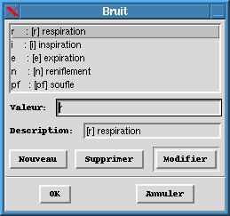
La liste des bruits, des marqueurs de prononciation, des marqueurs lexicaux
ou des langues peut être éditée avec les menus [Options]/[Evénements]/[Modifier
la liste...]. La valeur sera affichée dans l'éditeur
et la segmentation ; la description sera rappelée dans le menu proposant
la liste des événements prédéfinis. Une ligne
vide dans la liste apparaît comme un séparateur dans le menu
lors de l'insertion d'un événement. Pour la liste des langue,
il est souhaitable pour des raisons de cohérence de rentrer le code
iso639 de la langue rajoutée.
12.8. Configurer l'affichage des événements
La police de caractère et les couleurs utilisées pour l'affichage
des événements sont modifiables respectivement par les menus
[Options]/[Polices]/[Evénements] et [Options]/[Couleurs...]
; la fenêtre [Options]/[Evénements]/[Affichage
des événements...] permet de choisir la chaîne
de caractères de formatage des commentaires et des événements,
ainsi que les marqueurs instantanés, de début ou fin pour
les événements.
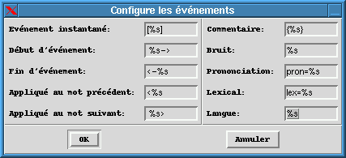
13. Raccourcis clavier
Le menu [Options]/[Raccourcis clavier...] propose une
fenêtre de dialogue pour la modification des raccourcis existants,
leur destruction, ou la création de nouveaux.
13.1. Définir un raccourci
Pour créer un nouveau raccourci, cliquer sur le bouton Nouveau
dans [Options]/[Raccourcis clavier...] puis renseigner
la combinaison de touches dans le premier champ, la chaîne de caractères
dans le deuxième et valider avec Modifier (pour continuer
l'édition) ou OK (pour terminer l'édition). Il est
possible de taper directement au clavier la combinaison de touches souhaitée
avec Control, Shift, Alt... lorsque le curseur
se trouve dans le premier champ (Touches). Attention, les raccourcis
clavier pour les commandes du menu peuvent être remplacés
par vos raccourcis.
13.2. Raccourci pour une expression courante
Sélectionner avec la souris l'expression courante pour laquelle
on souhaite faire un raccourci, choisir le menu [Options]/[Raccourcis
clavier...], entrer le raccourci souhaité dans le champ Touches
et valider avec OK. Le raccourci n'est pas nécessairement
une combinaison de touches mais peut être aussi constitué
des premières lettres de l'expression. Par exemple, "gor" peut ainsi
être remplacé automatiquement par "Gorbatchev". Ces raccourcis
sont indépendants du glossaire.
13.3. Raccourci pour un événement
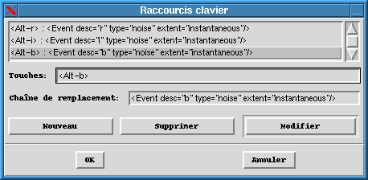
Il est possible de générer un événement
(bruit, commentaire, prononciation, etc.) avec un raccourci clavier. Il
faut générer dans la transcription un événement
identique à celui que l'on veut mémoriser (quitte à
le détruire ensuite), le sélectionner en grisé avec
la souris puis suivre la procédure précédente. Le
texte sélectionné peut même être une combinaison
arbitraire de texte et d'un ou plusieurs événements.
14. Options et configuration de l'interface
14.1. Nom du transcripteur
Le nom du transcripteur utilisant le logiciel peut être indiqué
dans [Options]/[Général]. Ce nom est utilisé
comme valeur par défaut dans les paramètres de l'enregistrement
lors de la création d'une nouvelle transcription.
14.2. Enregistrement de l'activité
Le nom d'un fichier pour enregistrer l'activité du transcripteur
peut être indiqué dans [Options]/[Général].
Par défaut, le champ est vide et la fonction est désactivée.
Si la fonction est active, le temps de travail est décompté
en excluant les pauses, et la quantité de travail sur chaque transcription
(nombre de sections, de tours créés, nombre de mots saisis)
est comptabilisée. Ces quantités sont affichées dans
la fenêtre [Fichier]/[Informations] et sont enregistrées
dans le fichier d'activité à la fin de la session. Des informations
spécifiques par fichier de transcription sont aussi enregistrées.
L'exploitation automatique de ces fichiers n'est actuellement pas réalisée
par le logiciel.
14.3. Changer les couleurs
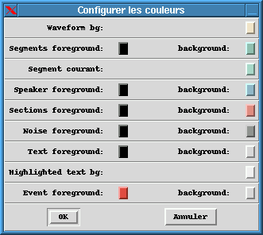
Le menu [Options]/[Couleurs...] propose une fenêtre
de dialogue qui permet de modifier la plupart des couleurs utilisées
dans le logiciel.
14.4. Changer les polices de caractères
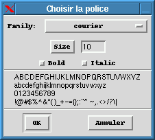
Les commandes du menu [Options]/[Police] permettent
de modifier les polices de caractères utilisées pour afficher
différents textes.
14.5. Traduction de l'interface
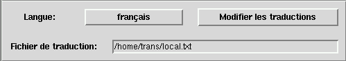
Il est possible de choisir la langue des messages affichés dans
[Options]/[Général...]. L'anglais est sélectionné
par défaut, et le français est disponible. Il est possible
de modifier les traductions de chacun des messages originaux en anglais.
Il est possible aussi de créer une traduction dans une nouvelle
langue. Si aucune traduction n'est indiquée, le message en anglais
s'affiche. La liste des messages à traduire va être complétée
progressivement lors de l'affichage de nouveaux messages en anglais. Pour
conserver ces traductions, il faut indiquer le nom d'un fichier dans le
champ Fichier de traduction dans [Options]/[Général]
puis choisir [Options]/[Enregistrer la configuration].
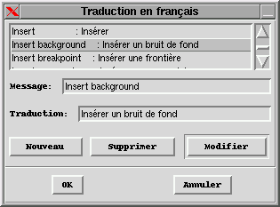
14.6. Deuxième vue du signal
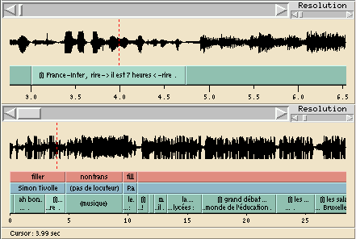
Le menu [Options]/[Affichage]/[Deuxième
vue du signal] permet d'afficher ou de masquer une deuxième
vue du signal, affichée à une autre échelle. Il peut
être nécessaire d'augmenter la taille de la fenêtre
pour la voir effectivement.
14.7. Masquer/afficher la barre centrale des boutons
Pour gagner de la place à l'écran, la commande [Options]/[Affichage]/[Boutons
de commande] commute l'affichage de la barre centrale des boutons
de commande.
14.8. Enregistrer les options choisies
Les options modifiées, la position des fenêtres, les raccourcis
claviers, le contenu du glossaire et les nom des fichiers de signal et
de transcription en cours d'édition sont être enregistrées
avec la commande du menu [Options]/[Enregistrer la configuration]
dans un fichier (normalement ~/.transcriber ) qui sera relu au
démarrage de la prochaine session. Les fichiers courants seront
réouverts automatiquement.
Avec l'option Propose d'enregistrer la configuration avant de quitter
est
activée dans [Options]/[Général...],
une boîte de dialogue est systématiquement affichée
avant de quitter le logiciel pour enregistrer la configuration courante.
15. Autres fonctions
15.1. Informations sur le signal et la transcription
Le bouton ou la commande
[Fichier]/[Informations] permet d'afficher une fenêtre
récapitulant des informations sur le nom des fichiers de signal
et de transcription, la durée du signal, le nombre de mots, de segments,
de tours de parole, de sections... de la transcription. Le bouton update
déclenche
une mise à jour des informations affichées. Dans le cas où
l'enregistrement de l'activité est activé, des informations
supplémentaires sur la quantité de travail effectuée
sont affichées.
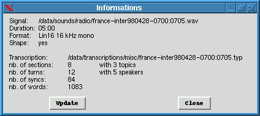
15.2. Quitter Transcriber
Menu [Fichier]/[Quitter] ou Control-q ; la sauvegarde
de la transcription est proposée si cela n'a pas déjà
été réalisé. Si l'option correspondante est
activée, l'enregistrement de la configuration courante est aussi
proposé.
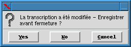
15.3. Aide
Une aide en ligne (affichant en particulier la licence, le manuel du transcripteur
et le présent manuel de référence) est disponible
dans le menu [Aide] ; ces documents peuvent être consultés
plus confortablement avec n'importe quel navigateur HTML gérant
les frames.